What it is
The whole game
World, NPC routines, dialogues, quests, combat, magic, crime and reputation, trading, saves and a UI in the style of the original. Myrtana reads it all from Gothic 3 itself.
Remaster, on or off
Volumetric clouds and new lighting, ground and rock materials, sand and snow, new trees and grass, reworked faces and armour, an HD map. Off by default: then it looks like Community Patch 1.75.
No game files inside
The repository holds only code and tools. A script takes the data from your Steam or GOG install and builds the game on your machine.
Open to everyone
MIT-licensed code. Fix bugs, port features, experiment with the renderer: pull requests are welcome.
Original and remaster
Each picture: Community Patch 1.75 on the left, the remaster on the right. Click to enlarge.

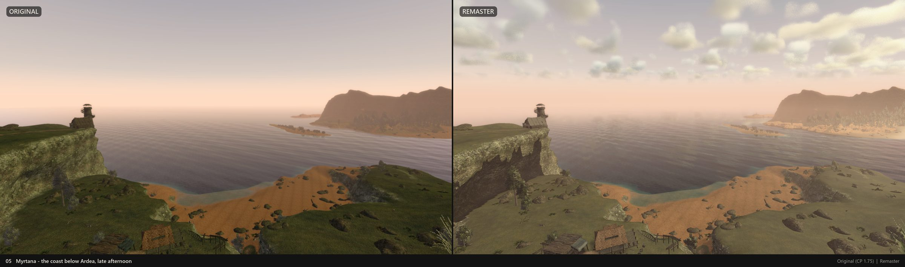

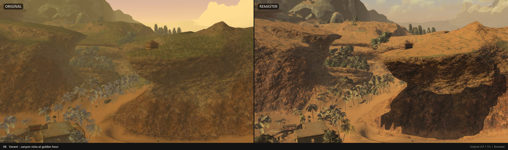

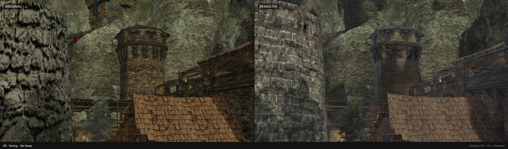

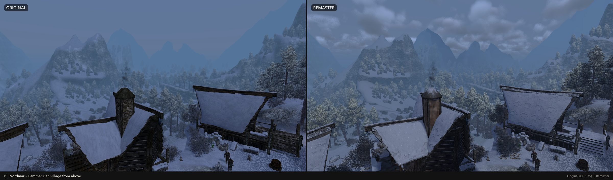

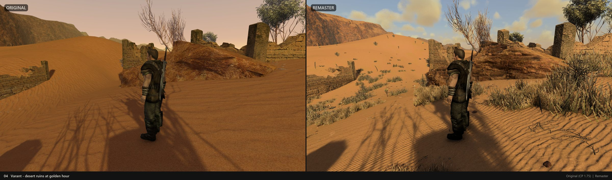

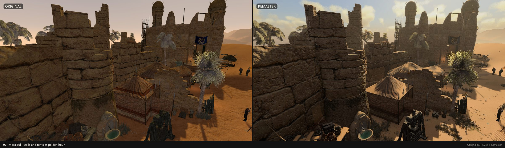

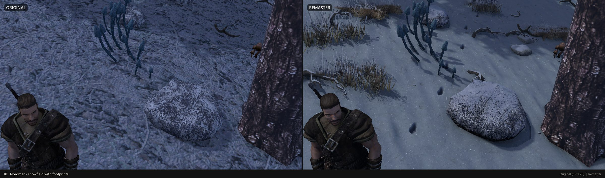

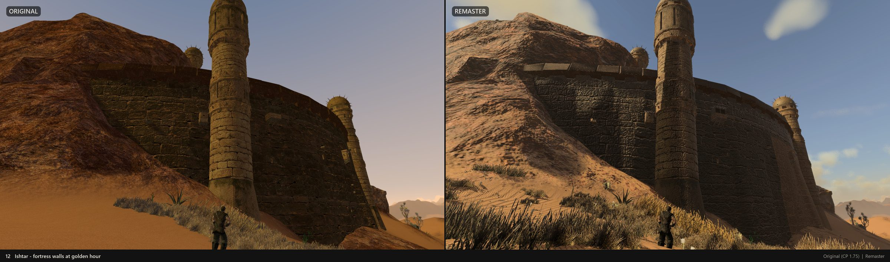

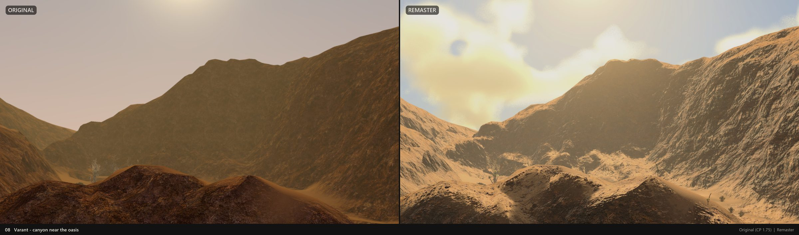

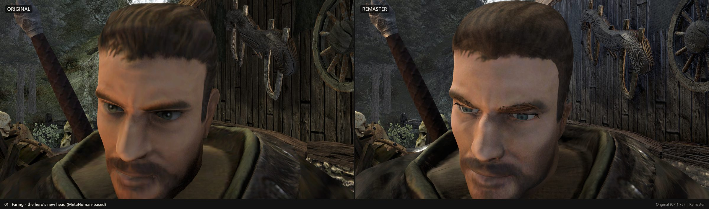

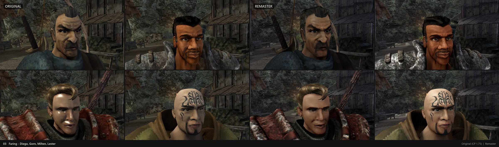

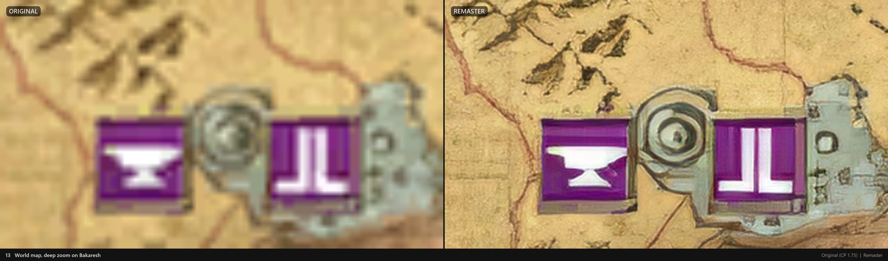
Build it yourself
You need Gothic 3 with Community Patch 1.75 (Steam or GOG), Windows 10/11 x64, 16 GB RAM, a DirectX 12 GPU, about 120 GB of free disk space while building, and Unity 6000.6.5f1 (Personal is free).
- Install the tools:
winget install Microsoft.DotNet.SDK.8 Gyan.FFmpeg Python.Python.3.12, plus the Visual Studio 2022 C++ Build Tools. - Clone the repository:
git clone https://github.com/szadev/Myrtana.git - Run
Tools\Setup\setup.cmd. It finds the game and Unity, downloads the ~12 GB remaster pack, converts the videos, imports everything and buildsG3World.exe. The first run takes a few hours.
Full instructions, options and troubleshooting are in the README. · Remaster pack
Questions
Is this a pirated copy of Gothic 3?
No. Myrtana contains no game data. Without a legally owned Gothic 3 nothing can be built.
Do I have to use the remaster?
No. It is off by default, and you can build without the remaster pack at all (-NoPack).
Which language?
Russian and English versions of Gothic 3 are supported: Myrtana uses the texts and speech of your install.
Can I help?
Yes: open an issue or a pull request on GitHub. Code lives in Assets/G3 (file formats, import) and Assets/Myrtana (game logic, UI).